(a) Starting pose

Prepare the clothes-stand lift
The agent corrects foot support and hand clearance before stepping. Root height, leg posture and finger placement change while the object’s initial pose stays fixed.


We propose HuMoTAR, an agentic approach to semantic humanoid retargeting. The agents write, test and iteratively revise motion and control code through closed-loop simulation feedback. We posit that frontier agentic models provide useful priors for preserving a motion’s semantic intent while meeting the robot’s physical requirements.
Consider the human demonstrations above, in which a person carries a chair, moves a clothes stand and tilts a bin with one foot. For a humanoid to perform these tasks, each demonstration must first be adapted to its body, since a humanoid differs from a human in proportions, joint limits and actuation. Current human-to-humanoid retargeting methods largely formulate this as a kinematic problem, in which the human’s motion is fitted to the robot while relevant contacts with the environment are preserved. HOI-Retarget, for example, optimizes the robot’s motion to match the demonstration’s body poses and object-relative contacts. This raises the question of what a humanoid should preserve from a demonstration.
We argue that retargeting should preserve the intended task rather than the precise movements a human uses to perform it. Take, for example, a person who carries and places a chair with one hand. The goal is to carry the chair to a target location and place it there, not to exactly reproduce the one-handed grasp motion. A humanoid may use both hands if that better suits its morphology and physical limits, since the task is unchanged even though the grasp and posture differ from the demonstration. In our experiments, we scale the demonstrated object trajectory to the robot’s size and use it as the target motion. The robot’s contact strategy, posture and controller are free to change.
A kinematically feasible reference is not necessarily dynamically feasible. SPIDER addresses this by posing retargeting as a constrained optimization over the robot’s motor commands. It samples many candidate command sequences in a physics simulator and keeps the ones whose simulated motion stays closest to the reference. However, errors in the input motion reference can lead SPIDER to the wrong contact strategy. Its open-loop execution is also sensitive to the robot’s starting pose. HuMoTAR revises both the motion reference and control code based on the resulting physical execution.
The above examples illustrate the gap between kinematic retargeting and physical execution. We execute the kinematic references provided by HOI-Retarget using SPIDER in physics simulation and compare them with HuMoTAR’s references. SPIDER fails to complete either task, while HuMoTAR achieves successful execution in physics simulation in both cases.
We compare HuMoTAR with SPIDER’s execution of the kinematic references generated by HOI-Retarget. Using GPT-6 Astra, we study iterative refinement with simulation feedback in three agentic configurations: a single Codex agent, an independent agentic swarm and a collaborative agentic swarm. We also evaluate Astra one-shot without tool calls or iterative refinement.
We compare these configurations under a fixed time budget and an equal compute budget measured in agent-hours to study the compute–time tradeoff between agentic swarms and longer single-agent iterative refinement.
For each task, the inputs to HuMoTAR are the human demonstration in SMPL format, an initial kinematic reference from HOI-Retarget, the task scene and the target object trajectory. The object trajectory is scaled for the robot and specifies the desired object motion. The agents write Python code to generate and refine a reference motion for the whole body and hands, which is the output of the framework.
The motion references and control code are executed in MuJoCo with SONIC as the whole-body controller. After each simulation, the agent inspects images of the execution, object-tracking errors and contact measurements. The available feedback is described in the appendix.
We evaluate 20 HUMOTO and 20 OMOMO tasks using object-tracking errors and semantic success. Object tracking compares the simulated object motion with the demonstrated trajectory scaled for G1. We do not require the object to reach each position at the same time in the human demonstration and the robot execution, since the robot may move at a different speed. Instead, we compare corresponding stages of the object’s motion.
Object-tracking errors are averaged equally across tasks. The evaluation protocol provides the judge prompt and review criteria.
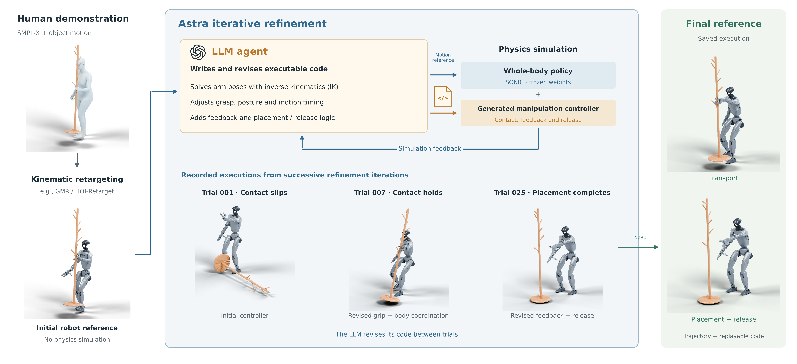
The architecture above shows how Astra uses a human demonstration and an initial kinematic reference to generate motion and control code. The agent tests each revision in simulation and uses the feedback to adjust grasp placement, body posture and the timing of lifting or release. The examples below show these changes, the feedback that prompted them and their effect on execution.
The agent corrects foot support and hand clearance before stepping. Root height, leg posture and finger placement change while the object’s initial pose stays fixed.

Foot placement and leg motion establish contact near the rim to tilt the bin. The other foot provides support while the right foot directs the interaction.

Both hands support the raised box through object-relative arm targets. The controller maintains the grip as the load transfers from the floor to the arms.

Pelvis-position feedback steers the whole-body reference while arm IK follows the backrest rail. The body advances with the chair while the hand maintains its grasp.

The agent slows the rocking phase and uses object-pose feedback to follow the tilt. Hand opening is staggered as the chair returns upright.

The agent adjusts the base orientation and waits for the lamp to settle before opening the fingers. The hand then withdraws while the floor supports the lamp.
Here we follow the agent selected by our orchestrator harness through a complete refinement of the clothes-stand interaction from Figure 5. In this OMOMO task, the robot must lift the stand, carry it through a turn and place it on the floor. Five saved revisions trace how the agent resolves a slipping grasp, brings the body into the motion and completes release.
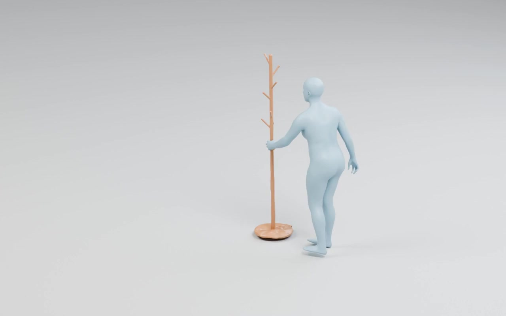
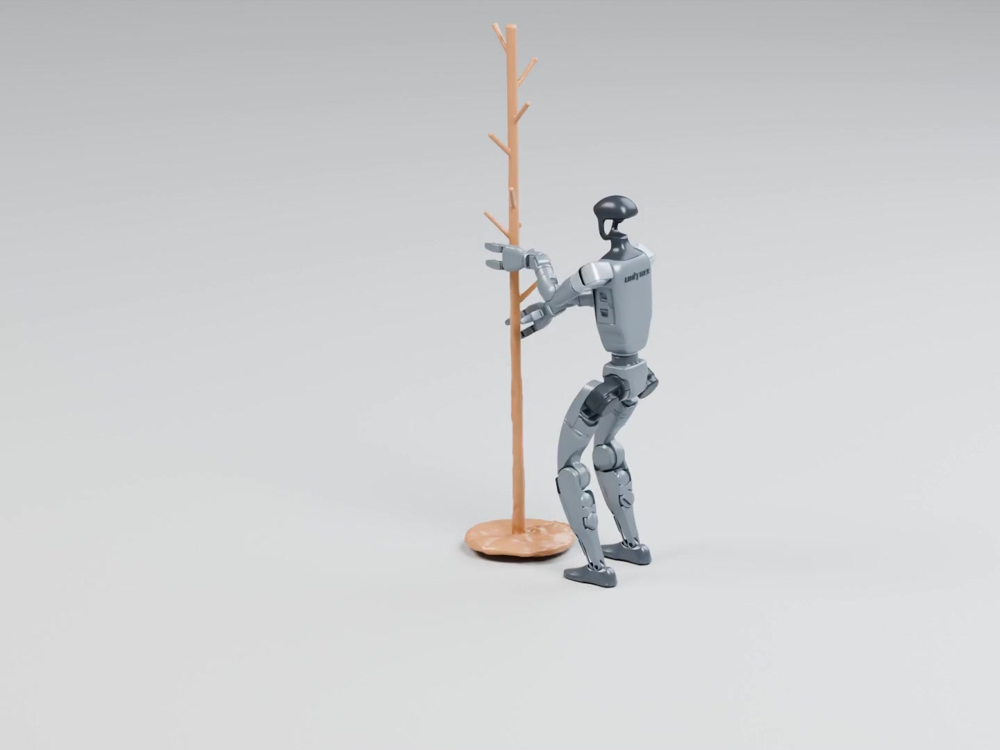
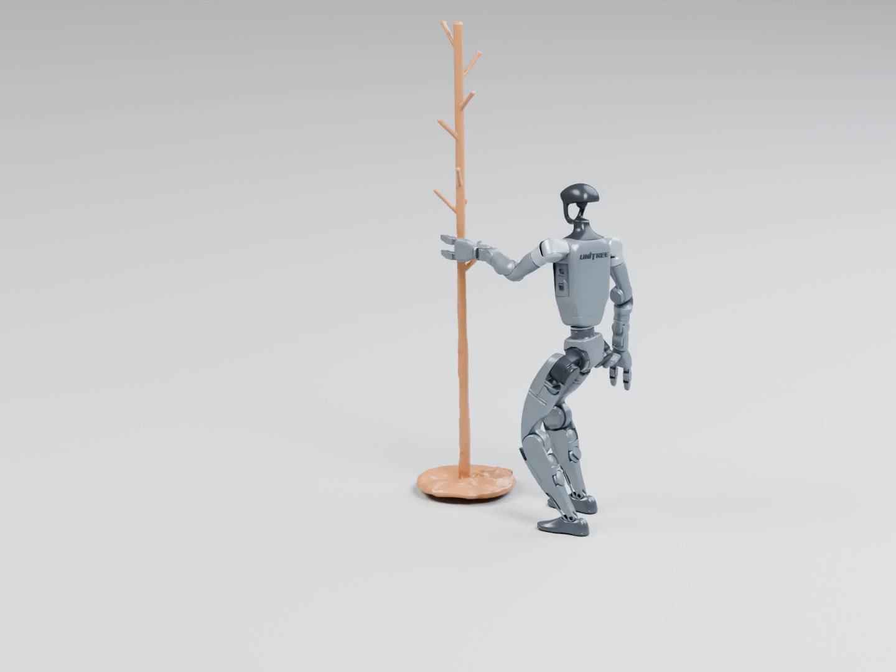
Fig. 6. Five revisions of the OMOMO clothes-stand task by HuMoTAR’s selected agent. Videos show the simulated motions; agent excerpts describe the changes between trials. The highlighted curve point identifies the displayed revision and its mean ADD.
We overlay the initial kinematic reference in purple and the refined reference in blue with the physical execution in solid gray. Their spatial separation shows where the prescribed and executed robot poses differ at corresponding motion phases. The refined hand path follows the executed grasp more closely; body posture can still differ as the controller maintains balance.
Fig. 6 (continued). Initial and refined references for the clothes-stand interaction. The figure includes physical execution; the video shows reference geometry without online controller corrections.
We first evaluate our agentic retargeting approach, HuMoTAR, against HOI-Retarget + SPIDER on 20 HUMOTO and 20 OMOMO tasks. For this comparison, we consider the single-Codex configuration and include Astra one-shot to examine performance without iterative refinement.
| Method | Mean ADD (cm) ↓ | Position error (cm) ↓ | Orientation error (°) ↓ | Semantic success ↑ |
|---|---|---|---|---|
| HOI-Retarget + SPIDER | 56.66 | 55.49 | 51.22 | 0/20 0.0% |
| Astra one-shot | 56.09 | 55.03 | 62.88 | 1/20 5.0% |
| Codex 30 min |
20.96 | 19.19 | 29.32 | 11/20 55.0% |
| Method | Mean ADD (cm) ↓ | Position error (cm) ↓ | Orientation error (°) ↓ | Semantic success ↑ |
|---|---|---|---|---|
| HOI-Retarget + SPIDER | 48.31 | 43.36 | 52.07 | 2/20 10.0% |
| Astra one-shot | 69.87 | 65.61 | 58.35 | 0/20 0.0% |
| Codex 30 min |
26.51 | 23.70 | 28.32 | 8/20 40.0% |
HOI-Retarget + SPIDER and Astra one-shot achieve semantic success rates of 5% and 2.5%, respectively. With iterative simulation feedback, a single Codex agent achieves 47.5%. Mean object-tracking error also decreases from 52.48 cm for HOI-Retarget + SPIDER and 62.98 cm for Astra one-shot to 23.74 cm for Codex. These results highlight the importance of iterative refinement with simulation feedback for successful physical execution.
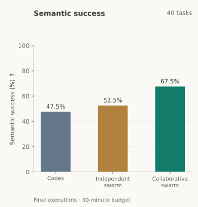
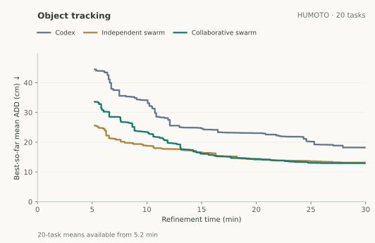
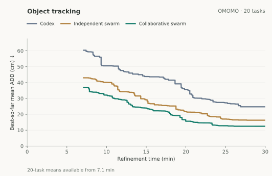
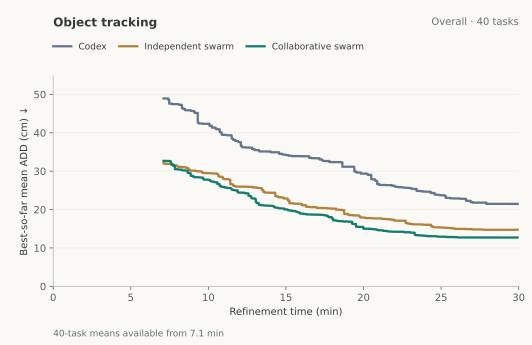
| Method | Tracking tasks | Mean ADD (cm) ↓ | Position error (cm) ↓ | Orientation error (°) ↓ | Semantic success ↑ |
|---|---|---|---|---|---|
| HUMOTO · 20 tasks | |||||
| Codex · 30 min | 20 | 20.96 | 19.19 | 29.32 | 11/20 · 55.0% |
| Independent swarm · 30 min | 20 | 14.30 | 13.87 | 22.07 | 9/20 · 45.0% |
| Collaborative swarm · 30 min | 20 | 13.45 | 13.07 | 21.59 | 12/20 · 60.0% |
| OMOMO · 20 tasks | |||||
| Codex · 30 min | 20 | 26.51 | 23.70 | 28.32 | 8/20 · 40.0% |
| Independent swarm · 30 min | 20 | 19.61 | 17.06 | 27.07 | 10/20 · 50.0% |
| Collaborative swarm · 30 min | 20 | 12.84 | 10.26 | 22.21 | 15/20 · 75.0% |
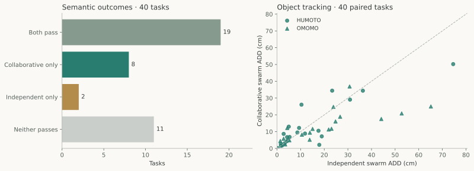
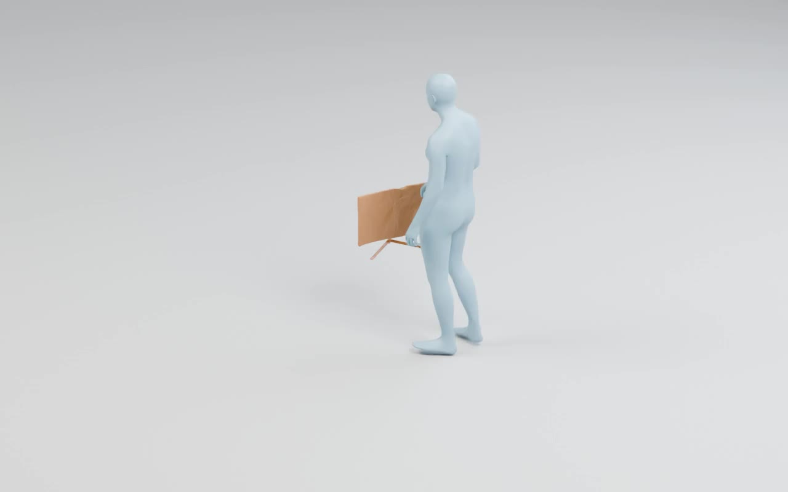
The task is to carry the monitor to a new position and leave it upright on its base.
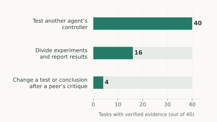
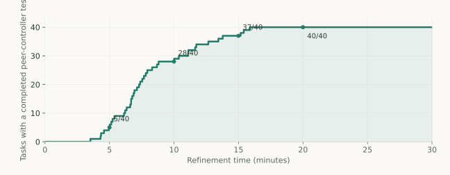
All 40 paired tasks were included. Readable independent logs cover 158 of 160 workers; collaborative logs cover all 160. Ten HUMOTO independent runs have a 15-minute four-worker stage followed by a single-worker continuation; only the four-worker stage is included in this audit. Reporting detail and run duration affect what can be verified.
The logs establish reuse and coordination, but do not establish that communication reduces repeated work. Unverified cases are not counted as absent. The outcome comparison does not isolate the contribution of each communication behavior.

| Method | Tracking tasks | Mean ADD (cm) ↓ | Position error (cm) ↓ | Orientation error (°) ↓ | Semantic success ↑ |
|---|---|---|---|---|---|
| HUMOTO · 20 tasks | |||||
| Collaborative swarm · 30 min | 20 | 13.45 | 13.07 | 21.59 | 12/20 · 60.0% |
| Codex · 120 min | 20 | 9.85 | 9.07 | 14.74 | 16/20 · 80.0% |
| OMOMO · 20 tasks | |||||
| Collaborative swarm · 30 min | 19 | 12.52 | 9.95 | 21.88 | 15/20 · 75.0% |
| Codex · 120 min | 19 | 15.55 | 14.16 | 16.46 | 14/20 · 70.0% |
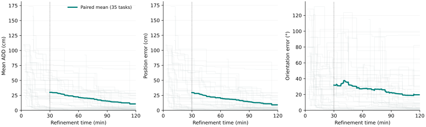

Yes, related experience helps in the shelf-righting example, but the benefit depends on what transfers to the new task. Reports from other furniture interactions help G1 complete the lift, reducing mean ADD from 23.35 to 7.77 cm compared with continuing without experience. Both continuations start from the same checkpoint and receive the same refinement time.
We investigate whether experience from related interactions helps a robot retarget a new task. Here, G1 must raise a shelf from lying on its side to standing upright. The experience consists of reports from four other furniture tasks, including carrying a table and lifting a chair. These reports summarize the strategies tested and their outcomes.
We first run four agents for 15 minutes, two with optional access to the provided retargeting tools, and select the best valid shelf motion. From this checkpoint, we run two separate 15-minute continuations: one receives the reports, and the other continues without them. Both use the same model, tools and starting solution, with 30 minutes of total refinement. This comparison measures the benefit of the supplied experience under an equal refinement budget.
We posit that retargeting should be evaluated by the successful transfer of an interaction’s semantic intent. In this study, object tracking provides a measurable objective for preserving the intended object motion. It is possible, however, for executions with similar tracking errors to differ in how fully they accomplish the task. User studies could complement these measurements by assessing whether the intended interaction is preserved. LLM-based judges could also supply semantic feedback during refinement and evaluation. We encourage the community to explore these directions and assess their agreement with human judgments.
Humanoid references can serve as training data for downstream whole-body policies. Our results demonstrate the promise of agentic refinement using off-the-shelf models and low-level controllers, without training a new policy for each interaction. Reinforcement-learning fine-tuning could build on these references to improve robustness to disturbances and variation in the task scene. Downstream policy training and deployment remain to be evaluated. We hope this work encourages the community to investigate agentic methods as a source of reference motions for learning interactive humanoid systems.
Our approach still struggles with thin objects and difficult contact geometries. In the plate example, the robot lifts the plate but does not complete the human’s swirling motion. Across the recorded attempts, agents revise finger placement and try two-handed support, yet the grasp remains unreliable during rotation. We observe that contact strategies must account for the robot’s hand morphology. The Dex3 fingers must establish opposing contacts around a thin, sloped rim, which appears to contribute to the difficulty of this task. Motion and controller refinement do not yet resolve this limitation.
We compare GMR, HOI-Retarget and HuMoTAR on the same task set.
We follow HOI-Retarget’s evaluation protocol (Appendix A): body pose deviation, link velocity direction error, contact-point gap and relative hand-orientation change measure how well the robot preserves the human motion and object-relative contacts. We also report body jerk as a smoothness measure, the mean magnitude of the third time derivative of the palm, ankle, head and pelvis positions, estimated by finite differences. Lower values indicate smoother motion.
| Method | Tasks | Body pose deviation (°) | Velocity direction error (°) | Contact-point gap (mm) | Hand orientation change (°) | Body jerk (m/s³) |
|---|---|---|---|---|---|---|
| HUMOTO · 20 tasks | ||||||
| GMR | 20 | 14.68 | 20.41 | 64.72 | 7.38 | 83.40 |
| HOI-Retarget | 20 | 15.18 | 28.08 | 36.58 | 7.41 | 25.93 |
| HuMoTAR | 20 | 8.98 | 10.65 | 4.27 | 0.23 | 9.18 |
| OMOMO · 20 tasks | ||||||
| GMR | 20 | 17.42 | 21.53 | 136.63 | 1.50 | 77.63 |
| HOI-Retarget | 20 | 18.94 | 26.10 | 31.31 | 4.93 | 34.68 |
| HuMoTAR | 20 | 8.56 | 11.07 | 3.53 | 0.20 | 9.99 |
HUMOTO: contact gap uses 16 tasks; hand orientation uses 16. Each metric uses the same applicable tasks across all three methods.
We give a single Codex agent a detailed task description, the scene and an initial robot–object state, without a human motion reference or target object trajectory. The agent has 30 minutes to refine an execution that follows the description, using SONIC for the legs and waist and custom arm and hand control. These five examples show the supplied commands and the resulting simulated motions.
Text command
A basket rests on the floor in front of the person. Bend toward it and reach down with the right hand to take its handle. Lift the basket clear of the floor while straightening the body. Bring it in front of the torso, then use the other hand to help steady and turn it for inspection. Tilt and rotate the basket so its opening and different sides can be examined, rather than simply holding it motionless. Keep it under control throughout the lift and the changes in orientation. Finish standing with the basket held in front of the body; the demonstrated sequence ends while it is still being held.

Text command
A small wooden side table with a raised curved rail stands on the floor in front of the person. Bend down, grasp the raised rail and lift the table off the floor as the body straightens. Keep the tabletop approximately level and the legs directed downward. Lower it back onto its legs in front of the body, then pause with the table supported on the floor. Bend toward it again and repeat the lifting action. Make the separate pickup, lowering, supported pause and renewed pickup recognizable, rather than replacing them with a single static hold or dragging the table along the floor. Remain near the table and keep each movement controlled.

Text command
Hold the small wooden side table with both hands in front of the torso, keeping its legs clear of the floor. Walk while carrying it along a curved path that turns the body through several facing directions, then comes back toward the starting area. The table travels with the person and turns with the body; its legs remain generally downward and the tabletop remains approximately level, with natural tilting during the turns. Keep both hands supporting the table while stepping and changing direction. Finish the walking sequence still holding the table in front of the body. The interaction should show sustained transport and turning, not stationary lifting or sliding on the floor.

Text command
Stand beside a tall freestanding clothes stand with a circular base and branches near the top. Reach to its vertical pole around waist height with one hand. Lift its base clear of the floor, then take a few steps to move the stand to a nearby position while keeping the pole mostly upright. Move the body together with the stand rather than reaching from a fixed stance. Lower the circular base onto the floor, allow the stand to settle upright, and release the pole. Finish beside the independently standing object with the hand withdrawn. The lift, short transport and deliberate placement should be clearly visible.

Text command
Face a wooden chair and bend toward it, placing both hands around the sides of the seat or nearby frame. Tilt and rock the chair so its seat and back lean and one pair of legs rises while the other pair remains near the floor. Guide the chair back toward an upright orientation and bring all four legs down under control. Keep the hands engaged while the chair changes orientation, and adjust the body with the movement. Finish with the chair upright and supported on its legs. This is a controlled rocking and righting interaction, not carrying the chair away or allowing it to fall.

The same Astra judging prompt compares the complete human demonstration and robot execution. A PASS means the main object interaction is substantially achieved. A FAIL means an essential action is missing or the object is lost before completion. An UNCERTAIN judgment is not counted as a pass. The prompt permits differences in robot posture, grasp and timing, as well as minor wobble or imperfect placement.
A separate opening-contact review checks for obvious initial hand–object penetration. Normal contact, small overlaps and ambiguous occlusion are not disqualifying. Suspected substantial intersections are reviewed with additional views; a collision-proxy measurement alone does not establish penetration. This review can change a PASS to a FAIL without modifying the original judge response. It is not a collision audit of the entire motion.
Success rates use all 40 assigned tasks. The two-hour Codex condition has one incomplete execution, counted as unsuccessful. Tracking comparisons with this condition use the same 39 valid tasks for both methods. The other final tracking comparisons use all 40 tasks.
You receive two videos: - Reference: the original human–object interaction. - Candidate: the robot execution. Does the candidate achieve the overall object interaction shown in the reference? Judge generously. Focus on what happens to the object across the complete motion. Exact trajectory, timing, robot posture and grasp need not match. Minor wobble and imperfect placement are acceptable. PASS if the main interaction is substantially achieved. FAIL if an essential part is missing or the object is lost before the interaction is completed. Check object rotation across multiple frames. Do not mistake an intentional set-down for a drop. Do not require release or a stationary ending unless the reference clearly makes it part of the interaction. If the view does not provide enough evidence, return UNCERTAIN instead of guessing. Return: - Verdict: PASS / FAIL / UNCERTAIN - Reason: one or two sentences citing visible moments in the candidate.
After a rollout, agents can inspect rendered views and numerical measurements from the recorded execution:
Agents can inspect these outputs with code and request further views or measurements. The observations they use depend on the trial; each iteration does not necessarily inspect every measurement.
Agents can write their own analysis and control code. Two ensemble agents also receive a supplied retargeting-tools file, which they may use, modify or replace. These helpers expose the following measurements and interfaces; they do not prescribe a grasp or a refinement sequence.
Table A2. Interfaces available during refinement.
| Tool or interface | What it provides |
|---|---|
| Contact inspection | Contact locations, normals and forces from a saved execution, with close-up views. |
| Geometry checks | Contact gaps, surface alignment, penetration and joint-limit margins for a proposed pose. |
| Motion diagnostics | Link-position and orientation errors, and reference, command and execution joint traces. |
| Object-path evaluation | Mean ADD, position and orientation errors against the fixed target trajectory. |
| Whole-body control | A frozen tracking policy driven by a motion reference. |
| Custom joint control | Targets, gains and feedforward torques for the agent’s manipulation controller. |
Table A3. Recorded agent token usage (millions). Totals cover the 20 HUMOTO and 20 OMOMO tasks in the dynamics comparison. HuMoTAR includes all ensemble workers, recorded retry attempts and the continuations used for the reported results. HOI-Retarget + SPIDER makes no model calls.
HUMOTO · 20 tasks
| Method | Input | Cached input | Output | Total |
|---|---|---|---|---|
| HOI-Retarget + SPIDER | 0.000 | 0.000 | 0.000 | 0.000 |
| Astra one-shot | 7.277 | 0.361 | 0.181 | 7.458 |
| Codex | 176.003 | 173.496 | 1.032 | 177.035 |
| HuMoTAR | 410.548 | 400.781 | 2.593 | 413.140 |
OMOMO · 20 tasks
| Method | Input | Cached input | Output | Total |
|---|---|---|---|---|
| HOI-Retarget + SPIDER | 0.000 | 0.000 | 0.000 | 0.000 |
| Astra one-shot | 1.505 | 0.000 | 0.171 | 1.676 |
| Codex | 132.942 | 130.910 | 0.801 | 133.742 |
| HuMoTAR | 633.498 | 624.557 | 3.798 | 637.296 |
Reported usage includes cached input and reasoning tokens.
All methods use the same 40 tasks. The table below lists mean ADD in centimetres and the final semantic verdict for every task. These are paired results, not a subset selected for improvement. SPIDER passes 2 tasks, one-shot passes 1 and 30-minute Codex passes 19. Codex preserves both SPIDER successes and adds 17. Relative to one-shot it preserves the one success and adds 18.
The comparison changes the complete workflow, including model access to execution and iterative revision. It does not isolate any single tool or prompt instruction.
| Task | SPIDER: ADD / verdict | One-shot: ADD / verdict | Codex 30 min: ADD / verdict |
|---|---|---|---|
| carry side table with both hands walk around-536 | 115.23 / FAIL | 101.81 / FAIL | 6.35 / PASS |
| carry wok turner right hand walk around-968 | 83.52 / FAIL | 74.51 / FAIL | 7.27 / PASS |
| carrying mixing bowl with both hands-134 | 71.70 / FAIL | 99.27 / FAIL | 12.48 / PASS |
| drag wash tub on ground while walking-176 | 69.77 / FAIL | 77.20 / FAIL | 26.22 / FAIL |
| examining cutting board-141 | 26.02 / FAIL | 26.29 / FAIL | 20.35 / FAIL |
| lift and push utility cart and walk-692 | 81.43 / FAIL | 110.92 / FAIL | 10.14 / PASS |
| lift shelf lie to stand-867 | 97.36 / FAIL | 66.43 / FAIL | 19.36 / PASS |
| lifting and carrying table-105 | 45.36 / FAIL | 70.56 / FAIL | 35.92 / FAIL |
| lifting and checking basket 90-215 | 46.38 / FAIL | 51.08 / FAIL | 6.66 / PASS |
| lifting and straightening working chair-433 | 28.39 / FAIL | 34.32 / FAIL | 2.75 / PASS |
| lifting and tilting table-304 | 25.39 / FAIL | 33.32 / FAIL | 33.19 / FAIL |
| lifting dining chair from backrest and placing back with right hand on ground-595 | 39.03 / FAIL | 33.57 / FAIL | 3.49 / PASS |
| lifting side table and putting down-362 | 13.53 / FAIL | 13.41 / FAIL | 2.43 / PASS |
| pulling and pushing the dining chair from back post-203 | 31.29 / FAIL | 8.86 / FAIL | 1.10 / FAIL |
| rearranging the vase from next to last shelf to two shelves above-640 | 52.63 / FAIL | 52.46 / FAIL | 52.45 / FAIL |
| sub10 clothesstand 002 | 61.33 / FAIL | 142.65 / FAIL | 6.30 / PASS |
| sub11 monitor 044 | 84.17 / FAIL | 87.92 / FAIL | 90.08 / FAIL |
| sub12 largebox 049 | 67.22 / FAIL | 96.86 / FAIL | 20.28 / PASS |
| sub12 tripod 023 | 35.22 / FAIL | 37.03 / FAIL | 13.87 / FAIL |
| sub13 whitechair 069 | 39.76 / FAIL | 59.22 / FAIL | 32.73 / FAIL |
| sub14 woodchair 011 | 62.47 / FAIL | 74.23 / FAIL | 22.65 / PASS |
| sub15 plasticbox 019 | 34.52 / FAIL | 43.49 / FAIL | 9.36 / PASS |
| sub15 woodchair 047 | 46.54 / FAIL | 55.00 / FAIL | 8.81 / PASS |
| sub15 woodchair 053 | 6.16 / PASS | 32.61 / FAIL | 1.74 / PASS |
| sub16 plasticbox 038 | 63.12 / FAIL | 107.96 / FAIL | 10.96 / FAIL |
| sub16 plasticbox 049 | 14.13 / FAIL | 23.50 / FAIL | 16.31 / FAIL |
| sub17 floorlamp 007 | 112.63 / FAIL | 106.17 / FAIL | 56.66 / FAIL |
| sub1 largetable 015 | 52.41 / FAIL | 88.46 / FAIL | 46.06 / FAIL |
| sub1 plasticbox 006 | 34.56 / PASS | 33.55 / FAIL | 4.54 / PASS |
| sub1 suitcase 060 | 22.76 / FAIL | 68.42 / FAIL | 42.99 / FAIL |
| sub4 suitcase 040 | 54.83 / FAIL | 55.98 / FAIL | 32.58 / FAIL |
| sub4 whitechair 039 | 47.34 / FAIL | 44.52 / FAIL | 17.38 / FAIL |
| sub6 whitechair 052 | 21.80 / FAIL | 12.65 / FAIL | 4.29 / PASS |
| sub8 plasticbox 052 | 37.42 / FAIL | 68.25 / FAIL | 19.45 / FAIL |
| sub9 monitor 056 | 67.75 / FAIL | 158.96 / FAIL | 73.16 / FAIL |
| subject holding plastic bowl walk back and fourth-039 | 78.43 / FAIL | 68.78 / FAIL | 43.17 / FAIL |
| tilting trash can with right foot-985 | 0.76 / FAIL | 1.55 / PASS | 0.21 / PASS |
| turn on floor lamp while sitting on low chair and drinking from mug-457 | 77.53 / FAIL | 35.99 / FAIL | 18.48 / FAIL |
| walk with low chair-308 | 87.64 / FAIL | 83.64 / FAIL | 62.39 / PASS |
| work with laptop put pen and notebooks in organizer-562 | 61.86 / FAIL | 77.90 / FAIL | 54.90 / FAIL |
All 30 tasks with four full 30-minute worker records have distinct final motion hashes among their valid workers. Their mean best-worker ADD is 20.12 cm, compared with 30.74 cm for the within-task median worker. This measures variation in executed outputs and the effect of selecting the lowest-error output. It does not measure diversity of strategies or prove that workers avoid redundant experiments.
The remaining ten historical HUMOTO results use four 15-minute workers followed by a 15-minute continuation of the selected worker without experience. Their initial worker spread is reported separately below. They contribute to the published final results, but not to the 30-task worker-spread means above. The historical independent and later collaborative runs are therefore not a controlled communication-only ablation.
Two independent-swarm PASS verdicts were disqualified by the separate initial-penetration review. The adjusted success count is 19/40, equal to 30-minute Codex. Seven tasks change from FAIL to PASS and seven from PASS to FAIL.
| Task | Worker budget (min) | Valid workers | Best ADD (cm) | Median ADD (cm) | Worst ADD (cm) |
|---|---|---|---|---|---|
| carry side table with both hands walk around-536 | 15 | 4 | 4.85 | 6.73 | 7.78 |
| carry wok turner right hand walk around-968 | 30 | 4 | 8.63 | 18.05 | 65.68 |
| carrying mixing bowl with both hands-134 | 15 | 4 | 3.75 | 5.09 | 6.65 |
| drag wash tub on ground while walking-176 | 15 | 4 | 11.86 | 14.24 | 24.50 |
| examining cutting board-141 | 30 | 4 | 18.95 | 23.19 | 24.78 |
| lift and push utility cart and walk-692 | 30 | 4 | 2.82 | 4.62 | 11.30 |
| lift shelf lie to stand-867 | 15 | 4 | 25.59 | 34.77 | 45.55 |
| lifting and carrying table-105 | 30 | 4 | 30.90 | 34.46 | 37.98 |
| lifting and checking basket 90-215 | 30 | 3 | 2.09 | 3.44 | 6.32 |
| lifting and straightening working chair-433 | 30 | 4 | 17.90 | 20.25 | 21.87 |
| lifting and tilting table-304 | 30 | 3 | 17.56 | 33.58 | 34.07 |
| lifting dining chair from backrest and placing back with right hand on ground-595 | 15 | 4 | 6.97 | 17.37 | 19.54 |
| lifting side table and putting down-362 | 30 | 3 | 1.64 | 3.83 | 12.04 |
| pulling and pushing the dining chair from back post-203 | 15 | 4 | 2.41 | 3.68 | 6.69 |
| rearranging the vase from next to last shelf to two shelves above-640 | 30 | 4 | 36.35 | 52.45 | 52.46 |
| subject holding plastic bowl walk back and fourth-039 | 15 | 4 | 10.62 | 15.09 | 19.03 |
| tilting trash can with right foot-985 | 15 | 4 | 0.29 | 0.37 | 0.41 |
| turn on floor lamp while sitting on low chair and drinking from mug-457 | 15 | 4 | 5.36 | 6.25 | 8.58 |
| walk with low chair-308 | 15 | 4 | 14.94 | 44.27 | 91.57 |
| work with laptop put pen and notebooks in organizer-562 | 30 | 4 | 74.59 | 74.86 | 78.19 |
| sub17 floorlamp 007 | 30 | 4 | 3.96 | 7.44 | 9.94 |
| sub14 woodchair 011 | 30 | 4 | 23.07 | 34.64 | 40.28 |
| sub16 plasticbox 038 | 30 | 4 | 24.77 | 52.49 | 70.68 |
| sub1 suitcase 060 | 30 | 3 | 30.74 | 52.22 | 54.44 |
| sub15 woodchair 047 | 30 | 4 | 4.34 | 8.98 | 9.99 |
| sub11 monitor 044 | 30 | 4 | 65.15 | 75.30 | 89.91 |
| sub12 largebox 049 | 30 | 4 | 21.87 | 79.19 | 81.07 |
| sub1 largetable 015 | 30 | 3 | 44.15 | 49.72 | 56.25 |
| sub6 whitechair 052 | 30 | 4 | 3.46 | 4.35 | 4.75 |
| sub15 plasticbox 019 | 30 | 3 | 13.82 | 15.79 | 17.62 |
| sub9 monitor 056 | 30 | 4 | 52.78 | 86.05 | 119.92 |
| sub4 suitcase 040 | 30 | 4 | 23.88 | 75.44 | 89.53 |
| sub10 clothesstand 002 | 30 | 4 | 4.61 | 6.96 | 21.53 |
| sub16 plasticbox 049 | 30 | 4 | 2.79 | 7.24 | 11.83 |
| sub15 woodchair 053 | 30 | 4 | 1.40 | 2.80 | 8.09 |
| sub8 plasticbox 052 | 30 | 4 | 15.06 | 19.19 | 21.36 |
| sub13 whitechair 069 | 30 | 4 | 26.72 | 29.57 | 35.36 |
| sub12 tripod 023 | 30 | 4 | 10.55 | 15.95 | 24.78 |
| sub4 whitechair 039 | 30 | 4 | 13.91 | 21.36 | 29.42 |
| sub1 plasticbox 006 | 30 | 4 | 5.23 | 8.79 | 14.93 |
The audit covers all 160 workers across all 40 tasks. It counts successful, completed communication calls, with duplicate event IDs checked across resumed sessions: 1,797 broadcasts through publish_findings, 3,238 direct messages through message_peer and 2,127 calls to read_peer_updates. These are tool calls, not estimates from prose summaries.
159 workers ran at least one successful shell command referencing a shared peer_files path. This includes reading and copying files as well as testing them. It is not a count of adopted controllers. The command audit also finds direct simulator invocations with a peer controller path, but a command alone does not establish that its rollout completed or improved the result.
The examples below show the content of the exchanges. They illustrate mechanisms present in the logs; they are not used to estimate their frequency or explain every outcome change.
Retrieved capped15 and running independent replay. I will sweep root feedback strengths with your capped15 (80/25cap25 baseline,120/40cap40,210/70cap50, desiredrootvelocityFF option). You handle cap size sweep. Adaptivephase decoupledbody failed/ejected at5s; not adopting.
message_peer · job/candidates/00/call/events.jsonl, line 1709.
Source SHA-256: d1ce4b75576b4eca70fa0cc5aa1b76bfd632ef5b74a83546fb3a6bc6c22d5707
Original coherent reference+ramp55 combined with later lowering/release failed after touchdown (ADD .54; object remains moving at30s), although carry itself .0606. Reject. Our successful +Y-release30 fallback was additionally checked framewise: no airborne frames without robot contact, max stem tilt24.68deg, final stem tilt1.995deg, last hand contact9.16s, final root velocity tiny. Thus no uncontrolled object drop. Retesting03 lower06/freeze30 plus acquisition variations now.
publish_findings · job/candidates/00/call/events.jsonl, line 1463.
Source SHA-256: da8a83e8d83ea9466c333fdaf00423e0b8bc9d5ded1a7649e1099e0e01391ff2
Worker01 time scaling .7 and1.5 failed to improve baseline ADD (.462/.447 vs .440), root undershoot unchanged. Position-only quaternion feedback in root-local frame (gain .2 cap .25) improves ADD .399, pos .435, rot25.3, min pelvis .720; gain .4 ADD .368 but causes table tipping (max orientation error90deg), unsafe to prefer. Sweeping alternating hip-pitch gait amplitude now. Direct arm impedance all worse .46-.48.
publish_findings · job/candidates/01/call/events.jsonl, line 582.
Source SHA-256: fc6487095284ea60394dc1b48d8e962cb7cfff1d33f3ba2e4cd2d16a27ec35a6
| Task | Broadcasts | Direct messages | Reads | Workers referencing shared files |
|---|---|---|---|---|
| carry side table with both hands walk around-536 | 66 | 69 | 48 | 4 |
| carry wok turner right hand walk around-968 | 58 | 62 | 63 | 4 |
| carrying mixing bowl with both hands-134 | 67 | 93 | 63 | 4 |
| drag wash tub on ground while walking-176 | 39 | 98 | 64 | 4 |
| examining cutting board-141 | 30 | 74 | 56 | 4 |
| lift and push utility cart and walk-692 | 42 | 88 | 62 | 4 |
| lift shelf lie to stand-867 | 41 | 92 | 48 | 4 |
| lifting and carrying table-105 | 35 | 61 | 51 | 4 |
| lifting and checking basket 90-215 | 67 | 81 | 68 | 4 |
| lifting and straightening working chair-433 | 44 | 100 | 48 | 4 |
| lifting and tilting table-304 | 36 | 70 | 66 | 4 |
| lifting dining chair from backrest and placing back with right hand on ground-595 | 47 | 99 | 63 | 4 |
| lifting side table and putting down-362 | 47 | 80 | 57 | 4 |
| pulling and pushing the dining chair from back post-203 | 36 | 79 | 59 | 4 |
| rearranging the vase from next to last shelf to two shelves above-640 | 40 | 47 | 29 | 4 |
| sub10 clothesstand 002 | 56 | 75 | 52 | 4 |
| sub11 monitor 044 | 32 | 93 | 67 | 4 |
| sub12 largebox 049 | 50 | 58 | 64 | 4 |
| sub12 tripod 023 | 49 | 58 | 48 | 4 |
| sub13 whitechair 069 | 40 | 89 | 47 | 4 |
| sub14 woodchair 011 | 41 | 76 | 46 | 4 |
| sub15 plasticbox 019 | 38 | 86 | 64 | 4 |
| sub15 woodchair 047 | 50 | 93 | 47 | 4 |
| sub15 woodchair 053 | 39 | 74 | 48 | 4 |
| sub16 plasticbox 038 | 45 | 84 | 44 | 4 |
| sub16 plasticbox 049 | 41 | 88 | 53 | 4 |
| sub17 floorlamp 007 | 66 | 82 | 59 | 4 |
| sub1 largetable 015 | 34 | 111 | 55 | 4 |
| sub1 plasticbox 006 | 47 | 66 | 57 | 4 |
| sub1 suitcase 060 | 30 | 77 | 52 | 4 |
| sub4 suitcase 040 | 40 | 76 | 59 | 4 |
| sub4 whitechair 039 | 49 | 88 | 63 | 4 |
| sub6 whitechair 052 | 42 | 78 | 39 | 4 |
| sub8 plasticbox 052 | 48 | 81 | 34 | 4 |
| sub9 monitor 056 | 35 | 113 | 65 | 4 |
| subject holding plastic bowl walk back and fourth-039 | 52 | 104 | 63 | 4 |
| tilting trash can with right foot-985 | 51 | 76 | 35 | 4 |
| turn on floor lamp while sitting on low chair and drinking from mug-457 | 57 | 64 | 45 | 4 |
| walk with low chair-308 | 41 | 104 | 49 | 4 |
| work with laptop put pen and notebooks in organizer-562 | 29 | 51 | 27 | 3 |
The final task outcomes are listed in the paired comparison, including the ten gains and two regressions. Fewer repeated trials, better strategy diversity and a causal effect of critique have not been established by these counts. Those claims would require classifying executed revisions and repeating the comparison under the same protocol.
For each cutoff, we retrospectively select the lowest-ADD recorded execution that had finished by that time. It must have completed its reference and passed the recorded initial-object-pose and zero-velocity checks. The framework scores every trial against the same complete target trajectory. All three displayed errors come from the execution selected by ADD. Position and orientation errors can therefore increase even when ADD decreases.
Active time is reconstructed from the original call and each resume's stated remaining budget. Documented interruption gaps are excluded. Independently generated final verification replays are excluded from intermediate selection. This is a retrospective analysis of saved outputs, not a claim that an agent had computed every comparison score at that instant.
35 tasks have an eligible output by 30 minutes. On that fixed paired set, mean ADD falls from 30.17 to 10.65 cm and 33 tasks improve. Comparing the selected 30- and 120-minute manifests, reference-file hashes change on 31 tasks and initial-state hashes on 26. A changed hash establishes an artifact change, not its purpose or a semantic improvement. The other five tasks remain visible below without an invented early value.
Semantic comparisons reuse the existing Astra judgments for the separate 30-minute and 120-minute Codex experiments, with their existing opening-contact reviews. These are final-output judgments, not judgments of intermediate outputs within the two-hour runs. No new replays or judgments are part of this analysis.
| Task | ADD at 30 min (cm) | ADD at 60 min (cm) | ADD at 120 min (cm) |
|---|---|---|---|
| carry side table with both hands walk around-536 | 9.13 | 4.83 | 2.87 |
| carry wok turner right hand walk around-968 | 15.65 | 7.73 | 6.62 |
| carrying mixing bowl with both hands-134 | 4.84 | 4.14 | 3.46 |
| drag wash tub on ground while walking-176 | 53.39 | 14.21 | 2.78 |
| examining cutting board-141 | 19.36 | 19.36 | 3.96 |
| lift and push utility cart and walk-692 | 23.52 | 23.52 | 12.42 |
| lift shelf lie to stand-867 | 58.27 | 29.16 | 6.83 |
| lifting and tilting table-304 | 23.18 | 18.51 | 1.45 |
| lifting dining chair from backrest and placing back with right hand on ground-595 | 4.16 | 2.90 | 0.87 |
| lifting side table and putting down-362 | 1.06 | 0.24 | 0.17 |
| pulling and pushing the dining chair from back post-203 | 1.88 | 0.26 | 0.26 |
| rearranging the vase from next to last shelf to two shelves above-640 | 29.21 | 29.21 | 29.21 |
| subject holding plastic bowl walk back and fourth-039 | 21.10 | 5.82 | 4.26 |
| tilting trash can with right foot-985 | 0.22 | 0.16 | 0.15 |
| lifting and carrying table-105 | 42.93 | 37.52 | 28.43 |
| lifting and checking basket 90-215 | 0.37 | 0.26 | 0.26 |
| lifting and straightening working chair-433 | 4.32 | 0.63 | 0.52 |
| turn on floor lamp while sitting on low chair and drinking from mug-457 | 50.66 | 39.95 | 3.59 |
| walk with low chair-308 | 49.47 | 28.83 | 19.20 |
| work with laptop put pen and notebooks in organizer-562 | 76.53 | 72.80 | 69.04 |
| sub17 floorlamp 007 | 0.45 | 0.32 | 0.31 |
| sub14 woodchair 011 | 33.37 | 33.37 | 11.98 |
| sub16 plasticbox 038 | 66.47 | 29.50 | 5.39 |
| sub1 suitcase 060 | 67.46 | 29.74 | 19.50 |
| sub15 woodchair 047 | 20.18 | 17.42 | 1.02 |
| sub11 monitor 044 | 63.41 | 55.39 | 25.08 |
| sub12 largebox 049 | 83.48 | 61.63 | 6.73 |
| sub9 monitor 056 | 102.75 | 81.95 | 27.76 |
| sub4 suitcase 040 | 51.93 | 32.85 | 32.85 |
| sub10 clothesstand 002 | 2.86 | 2.51 | 2.51 |
| sub16 plasticbox 049 | 3.57 | 2.72 | 1.80 |
| sub15 woodchair 053 | 0.87 | 0.84 | 0.84 |
| sub8 plasticbox 052 | 13.75 | 12.69 | 11.58 |
| sub13 whitechair 069 | 22.13 | 22.13 | 22.13 |
| sub15 plasticbox 019 | Not available | Not available | 1.98 |
| sub12 tripod 023 | 33.88 | 31.23 | 6.93 |
| sub1 largetable 015 | Not available | Not available | 1.65 |
| sub6 whitechair 052 | Not available | Not available | 1.88 |
| sub4 whitechair 039 | Not available | Not available | 25.02 |
| sub1 plasticbox 006 | Not available | Not available | 5.14 |
The final, separate-run semantic comparison has six Codex-only successes and three swarm-only successes. The judges describe missing rotation, transport or placement in the six gains, and incomplete release or loss of the object in the three regressions. This describes the final videos. It does not establish when those actions first became successful within the longer runs.
The collaborative swarm receives four 30-minute worker budgets, totalling two agent-hours. The longer Codex condition receives one 120-minute budget, also totalling two agent-hours. Allocated agent-hours do not equate token counts, simulation counts, accelerator usage or native delegated-agent work.
The final semantic comparison includes all 40 tasks and counts the incomplete two-hour submission as unsuccessful. Tracking uses the same 39 valid final executions for both methods: 13.00 cm ADD for the collaborative swarm and 12.63 cm for two-hour Codex. The within-run table above uses different, retrospective selections and must not be substituted for these final submitted results.
Each condition has one recorded run per task. Differences between conditions combine workflow, budget and sampling effects. The within-run analysis tests whether later recorded outputs improve over earlier ones, but repeated runs would be needed to establish how reliably a workflow produces that improvement.
Narayanan Palghat Parameswaran, Jay Karhade, Haoyang He, Neehar Peri, Jay Patrikar, Dong-Ki Kim, Shayegan Omidshafiei, Sebastian Scherer, Deva Ramanan. HuMoTAR: Physics-Aware Agentic Retargeting for Humanoid–Object Interaction. 2026.
@misc{parameswaran2026humotar,
title = {HuMoTAR: Physics-Aware Agentic Retargeting for Humanoid–Object Interaction},
author = {Palghat Parameswaran, Narayanan and Karhade, Jay and He, Haoyang
and Peri, Neehar and Patrikar, Jay and Kim, Dong-Ki
and Omidshafiei, Shayegan and Scherer, Sebastian and Ramanan, Deva},
year = {2026},
howpublished = {Project blog},
url = {https://narayananpp.github.io/semantic-humanoid-retargeting-blog/}
}